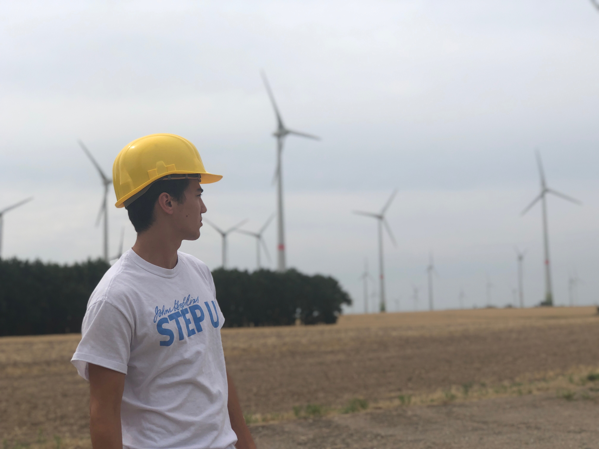
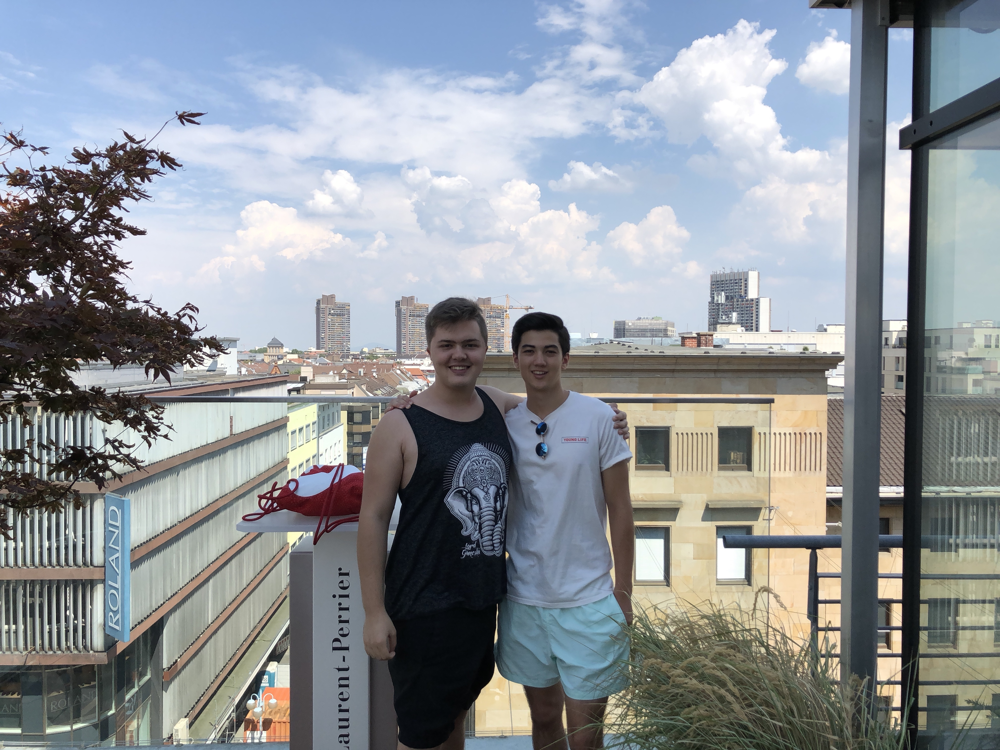

Week 4
Sun 05 August 2018 by nolanfeenyBerlin
The only thing we’ve done in Berlin this week is have a lot of class. Basically the goal by the end of the “semester” is to take given data from Traverse City regarding sun and wind speeds, and to model how to best implement a renewable energy system. This includes how many wind turbines / solar panels to build, and the averages including initial cost and expected benefit, both in terms of sustainability and the financial economy. At the end, we’ll have simulated multiple models and recommend a few optimal scenarios.

We did take a day field trip into a small town called Feldheim. They have around 140 people in population, and operate completely on renewables (wind, solar, biogas). They also produce 250x the amount of electricity that they need every year. Something to think about.
Mannheim / Ludwigshafen
I’ve been to Ludwigshafen in 2014, as part of an Okemos high school exchange program with my orchestra. During that time, I had a host family take me in very welcomingly and give me a very short preview of their culture. We’ve stayed in occasional contact, and the same student came to Okemos to stay with me for a week the following year.

This weekend I went back to stay with that family and they took me in just as graciously as they did before. It’s pretty amazing, because had that program not existed these are people that I would never have a relationship with, but because I do I’ve had opportunities that I would normally never have.
This was more of a relaxing weekend - a more settled down lifestyle than living in the bigger/busier city of Berlin. Traveling usually provides no rest for me, and that wasn’t the case this time. It was so cool to see everything look the same as 5 years ago. Honestly, I probably changed more than the city did. I also spoke German almost the whole weekend without using English, which to me was an accomplishment.